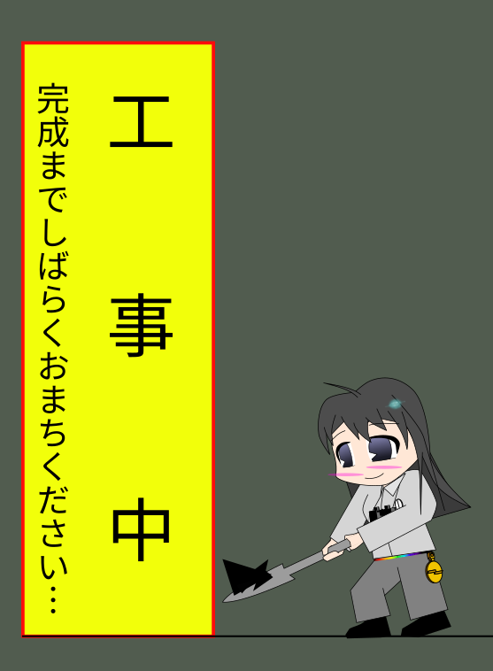

| あなたは | 人目のお客様です |
| トップ | 地学會について | 活動記録 | 成果物 | お問い合わせ | |||||
|
|||||||||
松本深志高校地学會のホームページです。

 地学會とは？
地学會とは？
松本深志高校地学會は、地学分野を広く扱う自然科学系の部活動です。
なにをするところ？
詳しくは、「地学會について」をご覧ください
現況
・縮小とんぼ祭！
・2026年4月第4週のどこかで、流星/彗星観測会を行います！
アカウントリスト
活動内容
地学會での活動は、すべてが任意参加です！
| 活動場所： | 本校2棟4階地学教室 |
| 基本活動日： | 毎週 火曜・木曜 |
全体で行っている活動
・ 小旅行 ・・・ 日帰りで旅行をします。旅行先は地質系から宇宙工学系と、例年さまざまです。
・ 流星群観測会 ・・・ 流星群がある時期に、学校に泊まり込みをして観測をします。記録用紙を用いた眼視観測を主に行っています。電波観測の機材もあります。
・ 黒点観測 ・・・ 当番制で、毎日太陽黒点のスケッチを昼休みに行います。
・ とんぼ祭 ・・・ とんぼ祭に向けて、プラネタリウムの練習や部誌の執筆などを行います。
個人で行っている活動(例)
・ いろんな研究 ・・・ 地学系の幅広い分野での研究があります。部誌だけでなく、ポスターセッションなどで発表することも多いです。深志高校の「探求活動」とテーマを等しくしている人も見られます。
・ 天体の観望・観測 ・・・ 地学會の機材を使って、部活を延長して観望・観測を行うこともあります。彗星や月食などの天文現象を対象とすることが多いです。
・ 資料の整理 ・・・ 地学會に眠っている膨大な資料を整理する人もいます。当時の雰囲気が感じられるものもあり、けっこう楽しいですよ！貴重な資料もあり、整理は学術的にも価値があります。
機材
地学會にはたくさんの高価な機材があります！
天体ドーム(約直径5 m)
・ タカハシ FCT-150 ・・・ 三枚玉フローライトの15cm屈折。地学會最大の、「主砲」です。
・ タカハシ FSQ-106 ・・・ 四枚玉フローライトの11cm屈折。かなり光学性能がいいらしいです。センサを撮り付けてよく使います
・ タカハシ EM500 Temma500 ・・・ 非常にしっかりとした赤道儀です。固定されているので、極軸もブレません。Temma500は謎です。
・ タカハシ 計算機 ・・・ Windows98が入っています。BITRANのCCDを動かすときに使います。ステライメージ3とか過去の資料があります…CRTモニタのリフレッシュレートが低すぎて見にくい
・ 計算機2 ・・・ こっちはちょっと新しめで、WindowsXPが入っています！ステライメージ3とステラナビゲータ ver.8があります。自動導入にも使えるみたいです。
・ 計算機3 ・・・ これにはなんとWindows10が入っています。電波観測用のソフトと、ZWOのASI系カメラを動かすソフトが入っています。
鏡筒(持ち出し可)
・ Vixen SD81S ・・・ 運びやすい上に80cmの集光力を得られるので重宝しています。小島よしおのサイン付きです
・ Vixen A62SS ・・・ 超コンパクト鏡筒です。「写真用」って感じですかね…あんまり使っている部員は見ません
・ MEADE DS-115 ・・・ 24年度卒の先輩から寄贈いただきました。主鏡の状態がよろしくなく、メンテナンスが必要そうです。
三脚・赤道儀(持ち出し可)
・ Vixen SX2 ・・・ これを持ち帰るのはオススメしません！という重さです。松本駅まで持っていくので大仕事ですよ…ただそれだけあって安定感はあります。なお、電源ケーブル紛失中につき、電動駆動ができません！
・ Vixen AP-WL ・・・ 軽い！といっても鏡筒よりずっと重いですが、これならそこそこ気軽に運べます。この赤道儀とSD81Sの組はなかなか優秀だと思います。乾電池でも動くのが素晴しい
・ Vixen SCG-HAL130 ・・・ これもそこそこ重いです。SX2を使わない限り出番はないかな…
・ Vixen APP-TL130 ・・・ 軽くていいです！AP-WLにちょうどいい感じです
その他
・ Vixen XPスポットファインダー ・・・
・ 自作 地学會可視光低分散分光器「FUKASIS」 ・・・
イメージセンサ
・ BITRAN BJ-30L ・・・
・ Vixen C10-4M ・・・
・ ZWO ASI678MC ・・・
since 2026-04-15
最終更新日：2026-04-15
================
Copyright © 2026 松本深志高等学校地学會